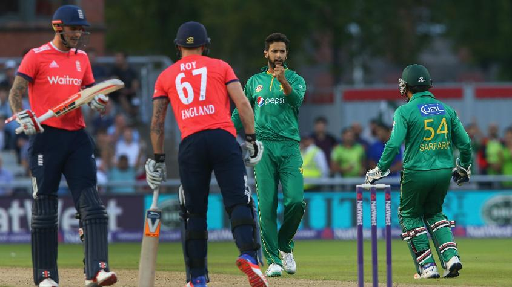

#CT17 Mickey Arthur speaks
#CT17 Mickey Arthur speaks
Arthur: "I don't want Pakistan to be unpredictable"
Coach hails team’s growing maturity over the past year, which helped them recover from “shambolic” game v India

Not too long ago, Mickey Arthur was in the firing line in an emotional press conference after Pakistan’s loss to India, where he was forced to “take the blame” for some team selections.
He might not have expected then to be addressing a much happier press meet a little over a week later as the coach of a Champions Trophy semi-finalist.
The ride over the last few days says everything about Pakistan cricket and its famed unpredictability. A few of the players even love the tag, but Arthur would rather see his side be consistent than ‘unpredictable’.
“I've just been buying a lot more chill pills,” he laughed on Tuesday, ahead of the semi-final against England. “I don't want us to be unpredictable. As a head coach, you want the team to have structure. You want the consistency levels to be good. Unpredictability as a coaching staff – we don't like it. We'd like us to do the basics a hell of a lot better, day in and day out, and that's what we train for every day.
“Sometimes that's our strength – our unpredictability. That's what makes it very interesting. Emotionally, it's tough at times. We give the guys clear roles, and the guys know what they need to do. It's just we do sometimes make it difficult for ourselves. But the guys are working extremely hard. We're evolving as a team. As we've said consistently, we're coming from a base of No. 8 in the world. So we're trying to keep evolving. And wins like we have – like we did yesterday, when you win ugly, you learn a lot about the team. I guess it gives a lot of confidence.” 0:00
In a reflection of his varying moods over the last few days, Arthur was blunt in his assessment of how “shambolic” Pakistan was against India, but also effusive in praise of its quick development.
“When you can sit in a dressing room and have mature conversations, your team is evolving. A year ago, we could not have mature conversations in the dressing room. We're now having mature conversations where players are looking at their performance and judging themselves without fear of any recrimination. I think, when you can do that, the team is in a good place. And we had a couple of those after the Indian game.
“I sit here incredibly proud of every one of those guys in the dressing room because I know how hard they've worked, and I know how hurt they were after their Indian clash. And for them to have come back and dusted themselves off is a really good effort.”